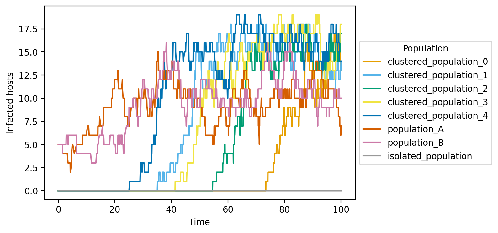

Opqua 

opqua (opkua, upkua) [Chibcha/muysccubun]
I. noun. ailment, disease, illness
II. noun. cause, reason [for which something occurs]
Taken from D. F. Gómez Aldana’s muysca-spanish dictionary.
Opqua is an epidemiological modeling framework for pathogen population genetics and evolution.
Opqua stochastically simulates pathogens with distinct, evolving genotypes that spread through populations of hosts which can have specific immune profiles.
Opqua is a useful tool to test out scenarios, explore hypotheses, make predictions, and teach about the relationship between pathogen evolution and epidemiology.
Among other things, Opqua can model
host-host, vector-borne, and vertical transmission
pathogen evolution through mutation, recombination, and/or reassortment
host recovery, death, and birth
metapopulations with complex structure and demographic interactions
interventions and events altering demographic, ecological, or evolutionary parameters
treatment and immunization of hosts or vectors
influence of pathogen genome sequences on transmission and evolution, as well as host demographic dynamics
intra- and inter-host competition and evolution of pathogen strains across user-specified adaptive landscapes
Check out the changelog file for information on recent updates.
Opqua has been used in-depth to study pathogen evolution across fitness valleys. Check out the peer-reviewed preprint on biorXiv, now peer-reviewed.
Opqua is developed by Pablo Cárdenas in collaboration with Vladimir Corredor and Mauricio Santos-Vega. Follow their science antics on Twitter at @pcr_guy and @msantosvega.
Opqua is available on PyPI and is distributed under an MIT License.
Example Plots
These are some of the plots Opqua is able to produce, but you can output the
raw simulation data yourself to make your own analyses and plots. These are all
taken from the examples in the examples/tutorials folder—try them out
yourself! See the
[Requirements and Installation](#Requirements and Installation) and
Usage sections for more details.
Population genetic composition plots for pathogens
An optimal pathogen genome arises and outcompetes all others through intra-host
competition. See fitness_function_mutation_example.py in the
examples/tutorials/evolution folder.

Host/vector compartment plots
A population with natural birth and death dynamics shows the effects of a
pathogen. “Dead” denotes deaths caused by pathogen infection. See
vector-borne_birth-death_example.py in the examples/tutorials/vital_dynamics
folder.

Plots of a host/vector compartment across different populations in a metapopulation
Pathogens spread through a network of interconnected populations of hosts. Lines
denote infected pathogens. See
metapopulations_migration_example.py in the
examples/tutorials/metapopulations folder.

Host/vector compartment plots
A population undergoes different interventions, including changes in
epidemiological parameters and vaccination. “Recovered” denotes immunized,
uninfected hosts.
See intervention_examples.py in the examples/tutorials/interventions folder.

Pathogen phylogenies
Phylogenies can be computed for pathogen genomes that emerge throughout the
simulation. See fitness_function_mutation_example.py in the
examples/tutorials/evolution folder.

For advanced examples (including multiple parameter sweeps), check out this separate repository (preprint forthcoming).
Requirements and Installation
Opqua runs on Python. A good place to get the latest version it if you don’t have it is Anaconda.
Opqua is available on PyPI to install
through pip, as explained below.
If you haven’t yet, install pip:
curl https://bootstrap.pypa.io/get-pip.py -o get-pip.py
python get-pip.py
Install Opqua by running
pip install opqua
The pip installer should take care of installing the necessary packages.
However, for reference, the versions of the packages used for opqua’s
development are saved in requirements.txt
Usage
To run any Opqua model (including the tutorials in the examples/tutorials
folder), save the model as a .py file and execute from the console using
python my_model.py.
You may also run the models from a notebook environment such as Jupyter or an integrated development environment (IDE) such as Spyder, both available through Anaconda.
Minimal example
The simplest model you can make using Opqua looks like this:
# This simulates a pathogen with genome "AAAAAAAAAA" spreading in a single
# population of 100 hosts, 20 of which are initially infected, under example
# preset conditions for host-host transmission.
from opqua.model import Model
my_model = Model()
my_model.newSetup('my_setup', preset='host-host')
my_model.newPopulation('my_population', 'my_setup', num_hosts=100)
my_model.addPathogensToHosts( 'my_population',{'AAAAAAAAAA':20} )
my_model.run(0,100)
data = my_model.saveToDataFrame('my_model.csv')
graph = my_model.compartmentPlot('my_model.png', data)
For more example usage, have a look at the examples folder. For an overview
of how Opqua models work, check out the Materials and Methods section on the
manuscript
here. A
summarized description is shown below in the
How Does Opqua Work? section.
For more information on the details of each function, head over to the
Model Documentation section.
How Does Opqua Work?
Basic concepts
Opqua models are composed of populations containing hosts and/or vectors, which themselves may be infected by a number of pathogens with different genomes.
A genome is represented as a string of characters. All genomes must be of the same length (a set number of loci), and each position within the genome can have one of a number of different characters specified by the user (corresponding to different alleles). Different loci in the genome may have different possible alleles available to them. Genomes may be composed of separate chromosomes, separated by the “/” character, which is reserved for this purpose.
Each population may have its own unique parameters dictating the events that happen inside of it, including how pathogens are spread between its hosts and vectors.
Events
There are different kinds of events that may occur to hosts and vectors in a population:
contact between an infectious host/vector and another host/vector in the same population (intra-population contact) or in a different population (“population contact”)
migration of a host/vector from one population to another
recovery of an infected host/vector
birth of a new host/vector from an existing host/vector
death of a host/vector due to pathogen infection or by “natural” causes
mutation of a pathogen in an infected host/vector
recombination of two pathogens in an infected host/vector

The likelihood of each event occurring is determined by the population’s parameters (explained in the newSetup function documentation) and the number of infected and healthy hosts and/or vectors in the population(s) involved. Crucially, it is also determined by the genome sequences of the pathogens infecting those hosts and vectors. The user may specify arbitrary functions to evaluate how a genome sequence affects any of the above kinds of rates. This is once again done through arguments of the newSetup function. As an example, a specific genome sequence may result in increased transmission within populations but decreased migration of infected hosts, or increased mutation rates. These custom functions may be different across populations, resulting in different adaptive landscapes within different populations.
Contacts within and between populations may happen by any combination of host-host, host-vector, and/or vector-host routes, depending on the populations’ parameters. When a contact occurs, each pathogen genome present in the infecting host/vector may be transferred to the receiving host/vector as long as one “infectious unit” is inoculated. The number of infectious units inoculated is randomly distributed based on a Poisson probability distribution. The mean of this distribution is set by the receiving host/vector’s population parameters, and is multiplied by the fraction of total intra-host fitness of each pathogen genome. For instance, consider the mean inoculum size for a host in a given population is 10 units and the infecting host/vector has two pathogens with fitnesses of 0.3 and 0.7, respectively. This would make the means of the Poisson distributions used to generate random infections for each pathogen equal to 3 and 7, respectively.
Inter-population contacts occur via the same mechanism as intra-population contacts, with the distinction that the two populations must be linked in a compatible way. As an example, if a vector-borne model with two separate populations is to allow vectors from Population A to contact hosts in Population B, then the contact rate of vectors in Population A and the contact rate of hosts in Population B must both be greater than zero. Migration of hosts/vectors from one population to another depends on a single rate defining the frequency of vector/host transport events from a given population to another. Therefore, Population A would have a specific migration rate dictating transport to Population B, and Population B would have a separate rate governing transport towards A.
Recovery of an infected host or vector results in all pathogens being removed from the host/vector. Additionally, the host/vector may optionally gain protection from pathogens that contain specific genome sequences present in the genomes of the pathogens it recovered from, representing immune memory. The user may specify a population parameter delimiting the contiguous loci in the genome that are saved on the recovered host/vector as “protection sequences”. Pathogens containing any of the host/vector’s protection sequences will not be able to infect the host/vector.
Births result in a new host/vector that may optionally inherit its parent’s protection sequences. Additionally, a parent may optionally infect its offspring at birth following a Poisson sampling process equivalent to the one described for other contact events above. Deaths of existing hosts/vectors can occur both naturally or due to infection mortality. Only deaths due to infection are tracked and recorded in the model’s history.
De novo mutation of a pathogen in a given host/vector results in a single locus within a pathogen’s genome being randomly assigned a new allele from the possible alleles at that position. Recombination of two pathogens in a given host/vector creates two new genomes based on the independent segregation of chromosomes (or reassortment of genome segments, depending on the field) from the two parent genomes. In addition, there may be a Poisson-distributed random number of crossover events between homologous parent chromosomes. Recombination by crossover event will result in all the loci in the chromosome on one side of the crossover event location being inherited from one of the parents, while the remainder of the chromosome is inherited from the other parent. The locations of crossover events are distributed throughout the genome following a uniform random distribution.
Interventions
Furthermore, the user may specify changes in model behavior at specific timepoints during the simulation. These changes are known as “interventions”. Interventions can include any kind of manipulation to populations in the model, including:
adding new populations
changing a population’s event parameters and adaptive landscape functions
linking and unlinking populations through migration or inter-population contact
adding and removing hosts and vectors to a population
Interventions can also include actions that involve specific hosts or vectors in a given population, such as:
adding pathogens with specific genomes to a host/vector
removing all protection sequences from some hosts/vectors in a population
applying a “treatment” in a population that cures some of its hosts/vectors of pathogens
applying a “vaccine” in a population that protects some of its hosts/vectors from pathogens
For these kinds of interventions involving specific pathogens in a population, the user may choose to apply them to a randomly-sampled fraction of hosts/vectors in a population, or to a specific group of individuals. This is useful when simulating consecutive interventions on the same specific group within a population. A single model may contain multiple groups of individuals and the same individual may be a member of multiple different groups. Individuals remain in the same group even if they migrate away from the population they were chosen in.
When a host/vector is given a “treatment”, it removes all pathogens within the host/vector that do not contain a collection of “resistance sequences”. A treatment may have multiple resistance sequences. A pathogen must contain all of these within its genome in order to avoid being removed. On the other hand, applying a vaccine consists of adding a specific protection sequence to hosts/vectors, which behaves as explained above for recovered hosts/vectors when they acquire immune protection, if the model allows it.
Simulation
Models are simulated using an implementation of the Gillespie algorithm in which the rates of different kinds of events across different populations are computed with each population’s parameters and current state, and are then stored in a matrix. In addition, each population has host and vector matrices containing coefficients that represent the contribution of each host and vector, respectively, to the rates in the master model rate matrix. Each coefficient is dependent on the genomes of the pathogens infecting its corresponding vector or host. Whenever an event occurs, the corresponding entries in the population matrix are updated, and the master rate matrix is recomputed based on this information.

The model’s state at any given time comprises all populations, their hosts and vectors, and the pathogen genomes infecting each of these. A copy of the model’s state is saved at every time point, or at intermittent intervals throughout the course of the simulation. A random sample of hosts and/or vectors may be saved instead of the entire model as a means of reducing memory footprint.
Output
The output of a model can be saved in multiple ways. The model state at each saved timepoint may be output in a single, raw pandas DataFrame, and saved as a tabular file. Other data output types include counts of pathogen genomes or protection sequences for the model, as well as time of first emergence for each pathogen genome and genome distance matrices for every timepoint sampled. The user can also create different kinds of plots to visualize the results. These include:
plots of the number of hosts and/or vectors in different epidemiological compartments (naive, infected, recovered, and dead) across simulation time
plots of the number of individuals in a compartment for different populations
plots of the genomic composition of the pathogen population over time
phylogenies of pathogen genomes
Users can also use the data output formats to make their own custom plots.
Model Documentation
All usage is handled through the Opqua Model class.
The Model class contains populations, setups, and interventions to be used
in simulation. It also contains groups of hosts/vectors for manipulations and
stores model history as snapshots for specific time points.
To use it, import the class as
from opqua.model import Model
You can find a detailed account of everything Model does in the
Model attributes and
Model class methods list sections.
Model class attributes
populations – dictionary with keys=population IDs, values=Population objects
setups – dictionary with keys=setup IDs, values=Setup objects
interventions – contains model interventions in the order they will occur
groups – dictionary with keys=group IDs, values=lists of hosts/vectors
history – dictionary with keys=time values, values=Model objects that are snapshots of Model at that timepoint
global_trackers – dictionary keeping track of some global indicators over all the course of the simulation
custom_condition_trackers – dictionary with keys=ID of custom condition, values=functions that take a Model object as argument and return True or False; every time True is returned by a function in custom_condition_trackers, the simulation time will be stored under the corresponding ID inside global_trackers[‘custom_condition’]
t_var – variable that tracks time in simulations
The dictionary global_trackers contains the following keys:
num_events: dictionary with the number of each kind of event in the simulation
last_event_time: time point at which the last event in the simulation happened
genomes_seen: list of all unique genomes that have appeared in the simulation
custom_conditions: dictionary with keys=ID of custom condition, values=lists of times; every time True is returned by a function in custom_condition_trackers, the simulation time will be stored under the corresponding ID inside global_trackers[‘custom_condition’]
The dictionary num_events inside of global_trackers contains the following keys:
MIGRATE_HOST
MIGRATE_VECTOR
POPULATION_CONTACT_HOST_HOST
POPULATION_CONTACT_HOST_VECTOR
POPULATION_CONTACT_VECTOR_HOST
CONTACT_HOST_HOST
CONTACT_HOST_VECTOR
CONTACT_VECTOR_HOST
RECOVER_HOST
RECOVER_VECTOR
MUTATE_HOST
MUTATE_VECTOR
RECOMBINE_HOST
RECOMBINE_VECTOR
KILL_HOST
KILL_VECTOR
DIE_HOST
DIE_VECTOR
BIRTH_HOST
BIRTH_VECTOR
KILL_HOST and KILL_VECTOR denote death due to infection, whereas DIE_HOST and DIE_VECTOR denote death by natural means.
Model class methods list
Model initialization and simulation
setRandomSeed – set random seed for numpy random number generator
newSetup – creates a new Setup, save it in setups dict under given name
newIntervention – creates a new intervention executed during simulation
run – simulates model for a specified length of time
runReplicates – simulate replicates of a model, save only end results
runParamSweep – simulate parameter sweep with a model, save only end results
copyState – copies a slimmed-down representation of model state
deepCopy – copies current model with inner references
Data Output and Plotting
saveToDataFrame – saves status of model to data frame, writes to file
getPathogens – creates data frame with counts for all pathogen genomes
getProtections – creates data frame with counts for all protection sequences
populationsPlot – plots aggregated totals per population across time
compartmentPlot – plots number of naive, infected, recovered, dead hosts/vectors vs time
compositionPlot – plots counts for pathogen genomes or resistance vs. time
clustermap – plots heatmap and dendrogram of all pathogens in given data
pathogenDistanceHistory – calculates pairwise distances for pathogen genomes at different times
getGenomeTimes – create DataFrame with times genomes first appeared during simulation
getCompositionData – create dataframe with counts for pathogen genomes or resistance
Model interventions
Make and connect populations:
newPopulation – create a new Population object with setup parameters
linkPopulationsHostMigration – set host migration rate from one population towards another
linkPopulationsVectorMigration – set vector migration rate from one population towards another
linkPopulationsHostHostContact – set host-host inter-population contact rate from one population towards another
linkPopulationsHostVectorContact – set host-vector inter-population contact rate from one population towards another
linkPopulationsVectorHostContact – set vector-host inter-population contact rate from one population towards another
createInterconnectedPopulations – create new populations, link all of them to each other by migration and/or inter-population contact
Manipulate hosts and vectors in population:
newHostGroup – returns a list of random (healthy or any) hosts
newVectorGroup – returns a list of random (healthy or any) vectors
addHosts – adds hosts to the population
addVectors – adds vectors to the population
removeHosts – removes hosts from the population
removeVectors – removes vectors from the population
addPathogensToHosts – adds pathogens with specified genomes to hosts
addPathogensToVectors – adds pathogens with specified genomes to vectors
treatHosts – removes infections susceptible to given treatment from hosts
treatVectors – removes infections susceptible to treatment from vectors
protectHosts – adds protection sequence to hosts
protectVectors – adds protection sequence to vectors
wipeProtectionHosts – removes all protection sequences from hosts
wipeProtectionVectors – removes all protection sequences from vectors
Modify population parameters:
setSetup – assigns a given set of parameters to this population
Utility:
customModelFunction – returns output of given function run on model
Preset fitness functions
peakLandscape – evaluates genome numeric phenotype by decreasing with distance from optimal sequence
valleyLandscape – evaluates genome numeric phenotype by increasing with distance from worst sequence
Detailed Model method list
setRandomSeed
- opqua.model.Model.setRandomSeed(self, seed)
Set random seed for numpy random number generator.
Arguments: seed – int for the random seed to be passed to numpy (int)
Model
- opqua.model.Model()[source]
Class defines a Model.
This is the main class that the user interacts with.
The Model class contains populations, setups, and interventions to be used in simulation. Also contains groups of hosts/vectors for manipulations and stores model history as snapshots for each time point.
* — CONSTANTS: — * ### Color scheme constants ### CB_PALETTE – a colorblind-friendly 8-color color scheme DEF_CMAP – a colormap object for Seaborn plots
* — ATTRIBUTES: — * populations – dictionary with keys=population IDs, values=Population
objects
setups – dictionary with keys=setup IDs, values=Setup objects interventions – contains model interventions in the order they will occur groups – dictionary with keys=group IDs, values=lists of hosts/vectors history – dictionary with keys=time values, values=Model objects that
are snapshots of Model at that timepoint
t_var – variable that tracks time in simulations
* — METHODS: — *
— Model Initialization and Simulation: —
setRandomSeed – set random seed for numpy random number generator newSetup – creates a new Setup, save it in setups dict under given name newIntervention – creates a new intervention executed during simulation run – simulates model for a specified length of time runReplicates – simulate replicates of a model, save only end results runParamSweep – simulate parameter sweep with a model, save only end results copyState – returns a slimmed-down version of the current model state
— Data Output and Plotting: —
saveToDataFrame – saves status of model to dataframe, writes to file getPathogens – creates Dataframe with counts for all pathogen genomes getProtections – creates Dataframe with counts for all protection sequences populationsPlot – plots aggregated totals per population across time compartmentPlot – plots number of naive,inf,rec,dead hosts/vectors vs time compositionPlot – plots counts for pathogen genomes or resistance vs. time clustermap – create a heatmap and dendrogram for pathogen genomes in data pathogenDistanceHistory – get pairwise distances for pathogen genomes getGenomeTimes – create DataFrame with times genomes first appeared during
simulation
- getCompositionData – create dataframe with counts for pathogen genomes or
resistance
— Model interventions: —
Make and connect populations -
newPopulation – create a new Population object with setup parameters linkPopulationsHostMigration – set host migration rate from one population
towards another
- linkPopulationsVectorMigration – set vector migration rate from one
population towards another
- linkPopulationsHostHostContact – set host-host inter-population contact
rate from one population towards another
- linkPopulationsHostVectorMigration – set host-vector inter-population
contact rate from one population towards another
- linkPopulationsVectorHostMigration – set vector-host inter-population
contact rate from one population towards another
- createInterconnectedPopulations – create new populations, link all of them
to each other by migration and/or inter-population contact
Manipulate hosts and vectors in population -
newHostGroup – returns a list of random (healthy or any) hosts newVectorGroup – returns a list of random (healthy or any) vectors addHosts – adds hosts to the population addVectors – adds vectors to the population removeHosts – removes hosts from the population removeVectors – removes vectors from the population addPathogensToHosts – adds pathogens with specified genomes to hosts addPathogensToVectors – adds pathogens with specified genomes to vectors treatHosts – removes infections susceptible to given treatment from hosts treatVectors – removes infections susceptible to treatment from vectors protectHosts – adds protection sequence to hosts protectVectors – adds protection sequence to vectors wipeProtectionHosts – removes all protection sequences from hosts wipeProtectionVectors – removes all protection sequences from vectors
Modify population parameters -
setSetup – assigns a given set of parameters to this population
Utility -
customModelFunction – returns output of given function run on model
- — Preset fitness functions: —
these are static methods
- peakLandscape – evaluates genome numeric phenotype by decreasing with
distance from optimal sequence
- valleyLandscape – evaluates genome numeric phenotype by increasing with
distance from worst sequence
newSetup
- opqua.model.Model.newSetup(self, name, preset=None, num_loci=None, possible_alleles=None, fitnessHost=None, contactHost=None, receiveContactHost=None, mortalityHost=None, natalityHost=None, recoveryHost=None, migrationHost=None, populationContactHost=None, receivePopulationContactHost=None, mutationHost=None, recombinationHost=None, fitnessVector=None, contactVector=None, receiveContactVector=None, mortalityVector=None, natalityVector=None, recoveryVector=None, migrationVector=None, populationContactVector=None, receivePopulationContactVector=None, mutationVector=None, recombinationVector=None, contact_rate_host_vector=None, transmission_efficiency_host_vector=None, transmission_efficiency_vector_host=None, contact_rate_host_host=None, transmission_efficiency_host_host=None, mean_inoculum_host=None, mean_inoculum_vector=None, recovery_rate_host=None, recovery_rate_vector=None, mortality_rate_host=None, mortality_rate_vector=None, recombine_in_host=None, recombine_in_vector=None, num_crossover_host=None, num_crossover_vector=None, mutate_in_host=None, mutate_in_vector=None, death_rate_host=None, death_rate_vector=None, birth_rate_host=None, birth_rate_vector=None, vertical_transmission_host=None, vertical_transmission_vector=None, inherit_protection_host=None, inherit_protection_vector=None, protection_upon_recovery_host=None, protection_upon_recovery_vector=None)
Create a new Setup, save it in setups dict under given name.
Two preset setups exist: “vector-borne” and “host-host”. You may select one of the preset setups with the preset keyword argument and then modify individual parameters with additional keyword arguments, without having to specify all of them.
Arguments: name – name of setup to be used as a key in model setups dictionary
Keyword arguments: preset – preset setup to be used: “vector-borne” or “host-host”, if
None, must define all other keyword arguments (default None; None or String)
num_loci – length of each pathogen genome string (int > 0) possible_alleles – set of possible characters in all genome string, or
at each position in genome string (String or list of Strings with num_loci elements)
- fitnessHost – function that evaluates relative fitness in head-to-head
competition for different genomes within the same host (function object, takes a String argument and returns a number >= 0)
- contactHost – function that returns coefficient modifying probability
of a given host being chosen to be the infector in a contact event, based on genome sequence of pathogen (function object, takes a String argument and returns a number 0-1)
- receiveContactHost – function that returns coefficient modifying
probability of a given host being chosen to be the infected in a contact event, based on genome sequence of pathogen
- mortalityHost – function that returns coefficient modifying death rate
for a given host, based on genome sequence of pathogen (function object, takes a String argument and returns a number 0-1)
- natalityHost – function that returns coefficient modifying birth rate
for a given host, based on genome sequence of pathogen (function object, takes a String argument and returns a number 0-1)
- recoveryHost – function that returns coefficient modifying recovery
rate for a given host based on genome sequence of pathogen (function object, takes a String argument and returns a number 0-1)
- migrationHost – function that returns coefficient modifying migration
rate for a given host based on genome sequence of pathogen (function object, takes a String argument and returns a number 0-1)
- populationContactHost – function that returns coefficient modifying
population contact rate for a given host based on genome sequence of pathogen (function object, takes a String argument and returns a number 0-1)
- mutationHost – function that returns coefficient modifying mutation
rate for a given host based on genome sequence of pathogen (function object, takes a String argument and returns a number 0-1)
- recombinationHost – function that returns coefficient modifying
recombination rate for a given host based on genome sequence of pathogen (function object, takes a String argument and returns a number 0-1)
- fitnessVector – function that evaluates relative fitness in head-to-
head competition for different genomes within the same vector (function object, takes a String argument and returns a number >= 0)
- contactVector – function that returns coefficient modifying probability
of a given vector being chosen to be the infector in a contact event, based on genome sequence of pathogen (function object, takes a String argument and returns a number 0-1)
- receiveContactVector – function that returns coefficient modifying
probability of a given vector being chosen to be the infected in a contact event, based on genome sequence of pathogen (function object, takes a String argument and returns a number 0-1)
- mortalityVector – function that returns coefficient modifying death
rate for a given vector, based on genome sequence of pathogen (function object, takes a String argument and returns a number 0-1)
- natalityVector – function that returns coefficient modifying birth rate
for a given vector, based on genome sequence of pathogen (function object, takes a String argument and returns a number 0-1)
- recoveryVector – function that returns coefficient modifying recovery
rate for a given vector based on genome sequence of pathogen (function object, takes a String argument and returns a number 0-1)
- migrationVector – function that returns coefficient modifying migration
rate for a given vector based on genome sequence of pathogen (function object, takes a String argument and returns a number 0-1)
- populationContactVector – function that returns coefficient modifying
population contact rate for a given vector based on genome sequence of pathogen (function object, takes a String argument and returns a number 0-1)
- mutationVector – function that returns coefficient modifying mutation
rate for a given vector based on genome sequence of pathogen (function object, takes a String argument and returns a number 0-1)
- recombinationVector – function that returns coefficient modifying
recombination rate for a given vector based on genome sequence of pathogen (function object, takes a String argument and returns a number 0-1)
- contact_rate_host_vector – rate of host-vector contact events, not
necessarily transmission, assumes constant population density; evts/time (number >= 0)
- transmission_efficiency_host_vector – fraction of host-vector contacts
that result in successful transmission
- transmission_efficiency_vector_host – fraction of vector-host contacts
that result in successful transmission
- contact_rate_host_host – rate of host-host contact events, not
necessarily transmission, assumes constant population density; evts/time (number >= 0)
- transmission_efficiency_host_host – fraction of host-host contacts
that result in successful transmission
- mean_inoculum_host – mean number of pathogens that are transmitted from
a vector or host into a new host during a contact event (int >= 0)
- mean_inoculum_vector – mean number of pathogens that are transmitted
from a host to a vector during a contact event (int >= 0)
- recovery_rate_host – rate at which hosts clear all pathogens;
1/time (number >= 0)
- recovery_rate_vector – rate at which vectors clear all pathogens
1/time (number >= 0)
- recovery_rate_vector – rate at which vectors clear all pathogens
1/time (number >= 0)
- mortality_rate_host – rate at which infected hosts die from disease
(number 0-1)
- mortality_rate_vector – rate at which infected vectors die from
disease (number 0-1)
- recombine_in_host – rate at which recombination occurs in host;
evts/time (number >= 0)
- recombine_in_vector – rate at which recombination occurs in vector;
evts/time (number >= 0)
- num_crossover_host – mean of a Poisson distribution modeling the number
of crossover events of host recombination events (number >= 0)
- num_crossover_vector – mean of a Poisson distribution modeling the
number of crossover events of vector recombination events (number >= 0)
- mutate_in_host – rate at which mutation occurs in host; evts/time
(number >= 0)
- mutate_in_vector – rate at which mutation occurs in vector; evts/time
(number >= 0)
death_rate_host – natural host death rate; 1/time (number >= 0) death_rate_vector – natural vector death rate; 1/time (number >= 0) birth_rate_host – infected host birth rate; 1/time (number >= 0) birth_rate_vector – infected vector birth rate; 1/time (number >= 0) vertical_transmission_host – probability that a host is infected by its
parent at birth (number 0-1)
- vertical_transmission_vector – probability that a vector is infected by
its parent at birth (number 0-1)
- inherit_protection_host – probability that a host inherits all
protection sequences from its parent (number 0-1)
- inherit_protection_vector – probability that a vector inherits all
protection sequences from its parent (number 0-1)
- protection_upon_recovery_host – defines indexes in genome string that
define substring to be added to host protection sequences after recovery (None or array-like of length 2 with int 0-num_loci)
- protection_upon_recovery_vector – defines indexes in genome string that
define substring to be added to vector protection sequences after recovery (None or array-like of length 2 with int 0-num_loci)
- opqua.model.Model.newSetup(self, name, preset=None, num_loci=None, possible_alleles=None, fitnessHost=None, contactHost=None, receiveContactHost=None, mortalityHost=None, natalityHost=None, recoveryHost=None, migrationHost=None, populationContactHost=None, receivePopulationContactHost=None, mutationHost=None, recombinationHost=None, fitnessVector=None, contactVector=None, receiveContactVector=None, mortalityVector=None, natalityVector=None, recoveryVector=None, migrationVector=None, populationContactVector=None, receivePopulationContactVector=None, mutationVector=None, recombinationVector=None, contact_rate_host_vector=None, transmission_efficiency_host_vector=None, transmission_efficiency_vector_host=None, contact_rate_host_host=None, transmission_efficiency_host_host=None, mean_inoculum_host=None, mean_inoculum_vector=None, recovery_rate_host=None, recovery_rate_vector=None, mortality_rate_host=None, mortality_rate_vector=None, recombine_in_host=None, recombine_in_vector=None, num_crossover_host=None, num_crossover_vector=None, mutate_in_host=None, mutate_in_vector=None, death_rate_host=None, death_rate_vector=None, birth_rate_host=None, birth_rate_vector=None, vertical_transmission_host=None, vertical_transmission_vector=None, inherit_protection_host=None, inherit_protection_vector=None, protection_upon_recovery_host=None, protection_upon_recovery_vector=None)
Create a new Setup, save it in setups dict under given name.
Two preset setups exist: “vector-borne” and “host-host”. You may select one of the preset setups with the preset keyword argument and then modify individual parameters with additional keyword arguments, without having to specify all of them.
Arguments: name – name of setup to be used as a key in model setups dictionary
Keyword arguments: preset – preset setup to be used: “vector-borne” or “host-host”, if
None, must define all other keyword arguments (default None; None or String)
num_loci – length of each pathogen genome string (int > 0) possible_alleles – set of possible characters in all genome string, or
at each position in genome string (String or list of Strings with num_loci elements)
- fitnessHost – function that evaluates relative fitness in head-to-head
competition for different genomes within the same host (function object, takes a String argument and returns a number >= 0)
- contactHost – function that returns coefficient modifying probability
of a given host being chosen to be the infector in a contact event, based on genome sequence of pathogen (function object, takes a String argument and returns a number 0-1)
- receiveContactHost – function that returns coefficient modifying
probability of a given host being chosen to be the infected in a contact event, based on genome sequence of pathogen
- mortalityHost – function that returns coefficient modifying death rate
for a given host, based on genome sequence of pathogen (function object, takes a String argument and returns a number 0-1)
- natalityHost – function that returns coefficient modifying birth rate
for a given host, based on genome sequence of pathogen (function object, takes a String argument and returns a number 0-1)
- recoveryHost – function that returns coefficient modifying recovery
rate for a given host based on genome sequence of pathogen (function object, takes a String argument and returns a number 0-1)
- migrationHost – function that returns coefficient modifying migration
rate for a given host based on genome sequence of pathogen (function object, takes a String argument and returns a number 0-1)
- populationContactHost – function that returns coefficient modifying
population contact rate for a given host based on genome sequence of pathogen (function object, takes a String argument and returns a number 0-1)
- mutationHost – function that returns coefficient modifying mutation
rate for a given host based on genome sequence of pathogen (function object, takes a String argument and returns a number 0-1)
- recombinationHost – function that returns coefficient modifying
recombination rate for a given host based on genome sequence of pathogen (function object, takes a String argument and returns a number 0-1)
- fitnessVector – function that evaluates relative fitness in head-to-
head competition for different genomes within the same vector (function object, takes a String argument and returns a number >= 0)
- contactVector – function that returns coefficient modifying probability
of a given vector being chosen to be the infector in a contact event, based on genome sequence of pathogen (function object, takes a String argument and returns a number 0-1)
- receiveContactVector – function that returns coefficient modifying
probability of a given vector being chosen to be the infected in a contact event, based on genome sequence of pathogen (function object, takes a String argument and returns a number 0-1)
- mortalityVector – function that returns coefficient modifying death
rate for a given vector, based on genome sequence of pathogen (function object, takes a String argument and returns a number 0-1)
- natalityVector – function that returns coefficient modifying birth rate
for a given vector, based on genome sequence of pathogen (function object, takes a String argument and returns a number 0-1)
- recoveryVector – function that returns coefficient modifying recovery
rate for a given vector based on genome sequence of pathogen (function object, takes a String argument and returns a number 0-1)
- migrationVector – function that returns coefficient modifying migration
rate for a given vector based on genome sequence of pathogen (function object, takes a String argument and returns a number 0-1)
- populationContactVector – function that returns coefficient modifying
population contact rate for a given vector based on genome sequence of pathogen (function object, takes a String argument and returns a number 0-1)
- mutationVector – function that returns coefficient modifying mutation
rate for a given vector based on genome sequence of pathogen (function object, takes a String argument and returns a number 0-1)
- recombinationVector – function that returns coefficient modifying
recombination rate for a given vector based on genome sequence of pathogen (function object, takes a String argument and returns a number 0-1)
- contact_rate_host_vector – rate of host-vector contact events, not
necessarily transmission, assumes constant population density; evts/time (number >= 0)
- transmission_efficiency_host_vector – fraction of host-vector contacts
that result in successful transmission
- transmission_efficiency_vector_host – fraction of vector-host contacts
that result in successful transmission
- contact_rate_host_host – rate of host-host contact events, not
necessarily transmission, assumes constant population density; evts/time (number >= 0)
- transmission_efficiency_host_host – fraction of host-host contacts
that result in successful transmission
- mean_inoculum_host – mean number of pathogens that are transmitted from
a vector or host into a new host during a contact event (int >= 0)
- mean_inoculum_vector – mean number of pathogens that are transmitted
from a host to a vector during a contact event (int >= 0)
- recovery_rate_host – rate at which hosts clear all pathogens;
1/time (number >= 0)
- recovery_rate_vector – rate at which vectors clear all pathogens
1/time (number >= 0)
- recovery_rate_vector – rate at which vectors clear all pathogens
1/time (number >= 0)
- mortality_rate_host – rate at which infected hosts die from disease
(number 0-1)
- mortality_rate_vector – rate at which infected vectors die from
disease (number 0-1)
- recombine_in_host – rate at which recombination occurs in host;
evts/time (number >= 0)
- recombine_in_vector – rate at which recombination occurs in vector;
evts/time (number >= 0)
- num_crossover_host – mean of a Poisson distribution modeling the number
of crossover events of host recombination events (number >= 0)
- num_crossover_vector – mean of a Poisson distribution modeling the
number of crossover events of vector recombination events (number >= 0)
- mutate_in_host – rate at which mutation occurs in host; evts/time
(number >= 0)
- mutate_in_vector – rate at which mutation occurs in vector; evts/time
(number >= 0)
death_rate_host – natural host death rate; 1/time (number >= 0) death_rate_vector – natural vector death rate; 1/time (number >= 0) birth_rate_host – infected host birth rate; 1/time (number >= 0) birth_rate_vector – infected vector birth rate; 1/time (number >= 0) vertical_transmission_host – probability that a host is infected by its
parent at birth (number 0-1)
- vertical_transmission_vector – probability that a vector is infected by
its parent at birth (number 0-1)
- inherit_protection_host – probability that a host inherits all
protection sequences from its parent (number 0-1)
- inherit_protection_vector – probability that a vector inherits all
protection sequences from its parent (number 0-1)
- protection_upon_recovery_host – defines indexes in genome string that
define substring to be added to host protection sequences after recovery (None or array-like of length 2 with int 0-num_loci)
- protection_upon_recovery_vector – defines indexes in genome string that
define substring to be added to vector protection sequences after recovery (None or array-like of length 2 with int 0-num_loci)
Two preset setups exist: “vector-borne” and “host-host”. You may select one of the preset setups with the preset keyword argument and then modify individual parameters with additional keyword arguments, without having to specify all of them.
“host-host”:
num_loci = 10
possible_alleles = 'ATCG'
fitnessHost = (lambda g: 1)
contactHost = (lambda g: 1)
receiveContactHost = (lambda g: 1)
mortalityHost = (lambda g: 1)
natalityHost = (lambda g: 1)
recoveryHost = (lambda g: 1)
migrationHost = (lambda g: 1)
populationContactHost = (lambda g: 1)
receivePopulationContactHost = (lambda g: 1)
mutationHost = (lambda g: 1)
recombinationHost = (lambda g: 1)
fitnessVector = (lambda g: 1)
contactVector = (lambda g: 1)
receiveContactVector = (lambda g: 1)
mortalityVector = (lambda g: 1)
natalityVector = (lambda g: 1)
recoveryVector = (lambda g: 1)
migrationVector = (lambda g: 1)
populationContactVector = (lambda g: 1)
receivePopulationContactVector = (lambda g: 1)
mutationVector = (lambda g: 1)
recombinationVector = (lambda g: 1)
contact_rate_host_vector = 0
transmission_efficiency_host_vector = 0
transmission_efficiency_vector_host = 0
contact_rate_host_host = 2e-1
transmission_efficiency_host_host = 1
mean_inoculum_host = 1e1
mean_inoculum_vector = 0
recovery_rate_host = 1e-1
recovery_rate_vector = 0
mortality_rate_host = 0
mortality_rate_vector = 0
recombine_in_host = 1e-4
recombine_in_vector = 0
num_crossover_host = 1
num_crossover_vector = 0
mutate_in_host = 1e-6
mutate_in_vector = 0
death_rate_host = 0
death_rate_vector = 0
birth_rate_host = 0
birth_rate_vector = 0
vertical_transmission_host = 0
vertical_transmission_vector = 0
inherit_protection_host = 0
inherit_protection_vector = 0
protection_upon_recovery_host = None
protection_upon_recovery_vector = None
“vector-borne”:
num_loci = 10
possible_alleles = 'ATCG'
fitnessHost = (lambda g: 1)
contactHost = (lambda g: 1)
receiveContactHost = (lambda g: 1)
mortalityHost = (lambda g: 1)
natalityHost = (lambda g: 1)
recoveryHost = (lambda g: 1)
migrationHost = (lambda g: 1)
populationContactHost = (lambda g: 1)
receivePopulationContactHost = (lambda g: 1)
mutationHost = (lambda g: 1)
recombinationHost = (lambda g: 1)
fitnessVector = (lambda g: 1)
contactVector = (lambda g: 1)
receiveContactVector = (lambda g: 1)
mortalityVector = (lambda g: 1)
natalityVector = (lambda g: 1)
recoveryVector = (lambda g: 1)
migrationVector = (lambda g: 1)
populationContactVector = (lambda g: 1)
receivePopulationContactVector = (lambda g: 1)
mutationVector = (lambda g: 1)
recombinationVector = (lambda g: 1)
contact_rate_host_vector = 2e-1
transmission_efficiency_host_vector = 1
transmission_efficiency_vector_host = 1
contact_rate_host_host = 0
transmission_efficiency_host_host = 0
mean_inoculum_host = 1e2
mean_inoculum_vector = 1e0
recovery_rate_host = 1e-1
recovery_rate_vector = 1e-1
mortality_rate_host = 0
mortality_rate_vector = 0
recombine_in_host = 0
recombine_in_vector = 1e-4
num_crossover_host = 0
num_crossover_vector = 1
mutate_in_host = 1e-6
mutate_in_vector = 0
death_rate_host = 0
death_rate_vector = 0
birth_rate_host = 0
birth_rate_vector = 0
vertical_transmission_host = 0
vertical_transmission_vector = 0
inherit_protection_host = 0
inherit_protection_vector = 0
protection_upon_recovery_host = None
protection_upon_recovery_vector = None
newIntervention
- opqua.model.Model.newIntervention(self, time, method_name, args)
Create a new intervention to be carried out at a specific time.
Arguments: time – time at which intervention will take place (number >= 0) method_name – intervention to be carried out, must correspond to the
name of a method of the Model object (String)
args – contains arguments for function in positinal order (array-like)
addCustomConditionTracker
- opqua.model.Model.addCustomConditionTracker(self, condition_id, trackerFunction)
Add a function to track occurrences of custom events in simulation.
Adds function trackerFunction to dictionary custom_condition_trackers under key condition_id. Function trackerFunction will be executed at every event in the simulation. Every time True is returned, the simulation time will be stored under the corresponding condition_id key inside global_trackers[‘custom_condition’]
Arguments: condition_id – ID of this specific condition (String) trackerFunction – function that take a Model object as argument and
returns True or False; (Function)
run
- opqua.model.Model.run(self, t0, tf, time_sampling=0, host_sampling=0, vector_sampling=0)
Simulate model for a specified time between two time points.
Simulates a time series using the Gillespie algorithm.
Saves a dictionary containing model state history, with keys=times and values=Model objects with model snapshot at that time point under this model’s history attribute.
Arguments: t0 – initial time point to start simulation at (number >= 0) tf – initial time point to end simulation at (number >= 0)
Keyword arguments: time_sampling – how many events to skip before saving a snapshot of the
system state (saves all by default), if <0, saves only final state (int, default 0)
- host_sampling – how many hosts to skip before saving one in a snapshot
of the system state (saves all by default) (int >= 0, default 0)
- vector_sampling – how many vectors to skip before saving one in a
snapshot of the system state (saves all by default) (int >= 0, default 0)
runReplicates
runReplicates(t0,tf,replicates,host_sampling=0,vector_sampling=0,**kwargs)
Simulate replicates of a model, save only end results.
Simulates replicates of a time series using the Gillespie algorithm.
Saves a dictionary containing model end state state, with keys=times and values=Model objects with model snapshot. The time is the final timepoint.
Arguments:
t0 – initial time point to start simulation at (number >= 0)
tf – initial time point to end simulation at (number >= 0)
replicates – how many replicates to simulate (int >= 1)
Keyword arguments:
host_sampling – how many hosts to skip before saving one in a snapshot of the system state (saves all by default) (int >= 0, default 0)
vector_sampling – how many vectors to skip before saving one in a snapshot of the system state (saves all by default) (int >= 0, default 0)
**kwargs – additional arguents for joblib multiprocessing
Returns: List of Model objects with the final snapshots
runParamSweep
runParamSweep(
t0,tf,setup_id,
param_sweep_dic={},pop_ids_param_sweep=[],
host_population_size_sweep={}, vector_population_size_sweep={},
host_migration_sweep_dic={}, vector_migration_sweep_dic={},
host_host_population_contact_sweep_dic={},
host_vector_population_contact_sweep_dic={},
vector_host_population_contact_sweep_dic={},
replicates=1,host_sampling=0,vector_sampling=0,n_cores=0,
**kwargs)
Simulate a parameter sweep with a model, save only end results.
Simulates variations of a time series using the Gillespie algorithm.
Saves a dictionary containing model end state state, with keys=times and values=Model objects with model snapshot. The time is the final timepoint.
Arguments:
t0 – initial time point to start simulation at (number >= 0)
tf – initial time point to end simulation at (number >= 0)
setup_id – ID of setup to be assigned (String)
Keyword Arguments:
param_sweep_dic – dictionary with keys=parameter names (attributes of Setup), values=list of values for parameter (list, class of elements depends on parameter)
host_population_size_sweep – dictionary with keys=population IDs (Strings), values=list of values with host population sizes (must be greater than original size set for each population, list of numbers)
vector_population_size_sweep – dictionary with keys=population IDs (Strings), values=list of values with vector population sizes (must be greater than original size set for each population, list of numbers)
host_migration_sweep_dic – dictionary with keys=population IDs of origin and destination, separated by a colon ‘;’ (Strings), values=list of values (list of numbers)
vector_migration_sweep_dic – dictionary with keys=population IDs of origin and destination, separated by a colon ‘;’ (Strings), values=list of values (list of numbers)
host_host_population_contact_sweep_dic – dictionary with keys=population IDs of origin and destination, separated by a colon ‘;’ (Strings), values=list of values (list of numbers)
host_vector_population_contact_sweep_dic – dictionary with keys=population IDs of origin and destination, separated by a colon ‘;’ (Strings), values=list of values (list of numbers)
vector_host_population_contact_sweep_dic – dictionary with keys=population IDs of origin and destination, separated by a colon ‘;’ (Strings), values=list of values (list of numbers)
replicates – how many replicates to simulate (int >= 1)
host_sampling – how many hosts to skip before saving one in a snapshot of the system state (saves all by default) (int >= 0, default 0)
vector_sampling – how many vectors to skip before saving one in a snapshot of the system state (saves all by default) (int >= 0, default 0)
n_cores – number of cores to parallelize file export across, if 0, all cores available are used (default 0; int >= 0)
**kwargs – additional arguents for joblib multiprocessing
Returns:
DataFrame with parameter combinations, list of Model objects with the final snapshots
copyState
copyState(host_sampling=0,vector_sampling=0)
Returns a slimmed-down representation of the current model state.
Keyword arguments:
host_sampling – how many hosts to skip before saving one in a snapshot of the system state (saves all by default) (int >= 0, default 0)
vector_sampling – how many vectors to skip before saving one in a snapshot of the system state (saves all by default) (int >= 0, default 0)
Returns: Model object with current population host and vector lists.
deepCopy
deepCopy()
Returns a full copy of the current model with inner references.
Returns: copied Model object
saveToDataFrame
saveToDataFrame(save_to_file,n_cores=0,**kwargs)
Save status of model to dataframe, write to file location given.
Creates a pandas Dataframe in long format with the given model history, with one host or vector per simulation time in each row, and columns:
Time - simulation time of entry
Population - ID of this host/vector’s population
Organism - host/vector
ID - ID of host/vector
Pathogens - all genomes present in this host/vector separated by ;
Protection - all genomes present in this host/vector separated by ;
Alive - whether host/vector is alive at this time, True/False
Arguments:
save_to_file – file path and name to save model data under (String)
Keyword Arguments:
n_cores – number of cores to parallelize file export across, if 0, all cores available are used (default 0; int)
**kwargs – additional arguents for joblib multiprocessing
Returns:
pandas dataframe with model history as described above
getCompositionData
getCompositionData(
data=None, populations=[], type_of_composition='Pathogens',
hosts=True, vectors=False, num_top_sequences=-1,
track_specific_sequences=[], genomic_positions=[],
count_individuals_based_on_model=None, save_data_to_file="", n_cores=0,
**kwargs)
Create dataframe with counts for pathogen genomes or resistance.
Creates a pandas Dataframe with dynamics of the pathogen strains or protection sequences across selected populations in the model, with one time point in each row and columns for pathogen genomes or protection sequences.
Of note: sum of totals for all sequences in one time point does not necessarily equal the number of infected hosts and/or vectors, given multiple infections in the same host/vector are counted separately.
Keyword Arguments:
data – dataframe with model history as produced by saveToDf function; if None, computes this dataframe and saves it under ‘raw_data_’+save_data_to_file (DataFrame, default None)
populations – IDs of populations to include in analysis; if empty, uses all populations in model (default empty list; list of Strings)
type_of_composition – field of data to count totals of, can be either ‘Pathogens’ or ‘Protection’ (default ‘Pathogens’; String)
hosts – whether to count hosts (default True, Boolean)
vectors – whether to count vectors (default False, Boolean)
num_top_sequences – how many sequences to count separately and include as columns, remainder will be counted under column “Other”; if <0, includes all genomes in model (default -1; int)
track_specific_sequences – contains specific sequences to have as a separate column if not part of the top num_top_sequences sequences (default empty list; list of Strings)
genomic_positions – list in which each element is a list with loci positions to extract (e.g. genomic_positions=[ [0,3], [5,6] ] extracts positions 0, 1, 2, and 5 from each genome); if empty, takes full genomes(default empty list; list of lists of int)
count_individuals_based_on_model – Model object with populations and fitness functions used to evaluate the most fit pathogen genome in each host/vector in order to count only a single pathogen per host/vector, asopposed to all pathogens within each host/vector; if None, counts all pathogens (default None; None or Model)
save_data_to_file – file path and name to save model data under, no saving occurs if empty string (default ‘’; String)
n_cores – number of cores to parallelize processing across, if 0, all cores available are used (default 0; int)
**kwargs – additional arguents for joblib multiprocessing
Returns:
pandas dataframe with model sequence composition dynamics as described above
getPathogens
getPathogens(dat, save_to_file="")
Create Dataframe with counts for all pathogen genomes in data.
Returns sorted pandas Dataframe with counts for occurrences of all pathogen genomes in data passed.
Arguments:
data – dataframe with model history as produced by saveToDf function
Keyword Arguments:
save_to_file – file path and name to save model data under, no saving occurs if empty string (default ‘’; String)
Returns:
pandas dataframe with Series as described above
getProtections
getProtections(dat, save_to_file="")
Create Dataframe with counts for all protection sequences in data.
Returns sorted pandas Dataframe with counts for occurrences of all protection sequences in data passed.
Arguments:
data – dataframe with model history as produced by saveToDf function
Keyword Arguments:
save_to_file – file path and name to save model data under, no saving
occurs if empty string (default ‘’; String)
Returns:
pandas dataframe with Series as described above
populationsPlot
populationsPlot(
file_name, data, compartment='Infected',
hosts=True, vectors=False, num_top_populations=7,
track_specific_populations=[], save_data_to_file="",
x_label='Time', y_label='Hosts', figsize=(8, 4), dpi=200,
palette=CB_PALETTE, stacked=False)
Create plot with aggregated totals per population across time.
Creates a line or stacked line plot with dynamics of a compartment across populations in the model, with one line for each population.
A host or vector is considered part of the recovered compartment if it has protection sequences of any kind and is not infected.
Arguments:
file_name – file path, name, and extension to save plot under (String)
data – dataframe with model history as produced by saveToDf function (DataFrame)
Keyword Arguments:
compartment – subset of hosts/vectors to count totals of, can be either ‘Naive’,’Infected’,’Recovered’, or ‘Dead’ (default ‘Infected’; String)
hosts – whether to count hosts (default True, Boolean)
vectors – whether to count vectors (default False, Boolean)
num_top_populations – how many populations to count separately and include as columns, remainder will be counted under column “Other”; if <0, includes all populations in model (default 7; int)
track_specific_populations – contains IDs of specific populations to have as a separate column if not part of the top num_top_populations populations (list of Strings)
save_data_to_file – file path and name to save model plot data under, no saving occurs if empty string (default ‘’; String)
x_label – X axis title (default ‘Time’, String)
y_label – Y axis title (default ‘Hosts’, String)
legend_title – legend title (default ‘Population’, String)
legend_values – labels for each trace, if empty list, uses population IDs (default empty list, list of Strings)
figsize – dimensions of figure (default (8,4), array-like of two ints)
dpi – figure resolution (default 200, int)
palette – color palette to use for traces (default CB_PALETTE, list of color Strings)
stacked – whether to draw a regular line plot or a stacked one (default False, Boolean)
Returns:
axis object for plot with model population dynamics as described above
compartmentPlot
compartmentPlot(
file_name, data, populations=[], hosts=True, vectors=False,
save_data_to_file="", x_label='Time', y_label='Hosts',
figsize=(8, 4), dpi=200, palette=CB_PALETTE, stacked=False)
Create plot with number of naive, infected, recovered, dead hosts/vectors vs. time.
Creates a line or stacked line plot with dynamics of all compartments (naive, infected, recovered, dead) across selected populations in the model, with one line for each compartment.
A host or vector is considered recovered if it has protection sequences of any kind and is not infected.
Arguments:
file_name – file path, name, and extension to save plot under (String)
data – dataframe with model history as produced by saveToDf function (DataFrame)
Keyword Arguments:
populations – IDs of populations to include in analysis; if empty, uses
all populations in model (default empty list; list of Strings)
hosts – whether to count hosts (default True, Boolean)
vectors – whether to count vectors (default False, Boolean)
save_data_to_file – file path and name to save model data under, no saving
occurs if empty string (default ‘’; String)
x_label – X axis title (default ‘Time’, String)
y_label – Y axis title (default ‘Hosts’, String)
legend_title – legend title (default ‘Population’, String)
legend_values – labels for each trace, if empty list, uses population IDs (default empty list, list of Strings)
figsize – dimensions of figure (default (8,4), array-like of two ints)
dpi – figure resolution (default 200, int)
palette – color palette to use for traces (default CB_PALETTE, list of color Strings)
stacked – whether to draw a regular line plot or a stacked one (default False, Boolean)
Returns:
axis object for plot with model compartment dynamics as described above
compositionPlot
compositionPlot(
file_name, data, composition_dataframe=None, populations=[],
type_of_composition='Pathogens', hosts=True, vectors=False,
num_top_sequences=7, track_specific_sequences=[],
genomic_positions=[], count_individuals_based_on_model=None,
remove_legend=False, population_fraction=False,
save_data_to_file="", x_label='Time', y_label='Infections',
legend_title='Genotype', legend_values=[],
figsize=(8, 4), dpi=200, palette=CB_PALETTE, stacked=True,
**kwargs)
Create plot with counts for pathogen genomes or resistance vs. time.
Creates a line or stacked line plot with dynamics of the pathogen strains or protection sequences across selected populations in the model, with one line for each pathogen genome or protection sequence being shown.s
Of note: sum of totals for all sequences in one time point does not necessarily equal the number of infected hosts and/or vectors, given multiple infections in the same host/vector are counted separately.
Arguments:
file_name – file path, name, and extension to save plot under (String)
data – dataframe with model history as produced by saveToDf function
Keyword Arguments:
composition_dataframe – output of compositionDf() if already computed (Pandas DataFrame, None by default)
populations – IDs of populations to include in analysis; if empty, uses all populations in model (default empty list; list of Strings)
type_of_composition – field of data to count totals of, can be either ‘Pathogens’ or ‘Protection’ (default ‘Pathogens’; String)
hosts – whether to count hosts (default True, Boolean)
vectors – whether to count vectors (default False, Boolean)
num_top_sequences – how many sequences to count separately and include as columns, remainder will be counted under column “Other”; if <0, includes all genomes in model (default 7; int)
track_specific_sequences – contains specific sequences to have as a separate column if not part of the top num_top_sequences sequences (list of Strings)
genomic_positions – list in which each element is a list with loci positions to extract (e.g. genomic_positions=[ [0,3], [5,6] ] extracts positions 0, 1, 2, and 5 from each genome); if empty, takes full genomes (default empty list; list of lists of int)
count_individuals_based_on_model – Model object with populations and fitness functions used to evaluate the most fit pathogen genome in each host/vector in order to count only a single pathogen per host/vector, as opposed to all pathogens within each host/vector; if None, counts all pathogens (default None; None or Model)
save_data_to_file – file path and name to save model data under, no saving occurs if empty string (default ‘’; String)
x_label – X axis title (default ‘Time’, String)
y_label – Y axis title (default ‘Hosts’, String)
legend_title – legend title (default ‘Population’, String)
legend_values – labels for each trace, if empty list, uses population IDs (default empty list, list of Strings)
figsize – dimensions of figure (default (8,4), array-like of two ints)
dpi – figure resolution (default 200, int)
palette – color palette to use for traces (default CB_PALETTE, list of color Strings)
stacked – whether to draw a regular line plot instead of a stacked one (default False, Boolean).
remove_legend – whether to print the sequences on the figure legend instead of printing them on a separate csv file (default True; Boolean)
population_fraction – whether to graph fractions of pathogen population instead of pathogen counts (default False, Boolean)
**kwargs – additional arguents for joblib multiprocessing
Returns:
axis object for plot with model sequence composition dynamics as described
clustermap
clustermap(file_name, data, num_top_sequences=-1,
track_specific_sequences=[], seq_names=[], n_cores=0, method='weighted',
metric='euclidean',save_data_to_file="", legend_title='Distance',
legend_values=[], figsize=(10,10), dpi=200, color_map=DEF_CMAP)
Create a heatmap and dendrogram for pathogen genomes in data passed.
Arguments:
file_name – file path, name, and extension to save plot under (String)
data – dataframe with model history as produced by saveToDf function
Keyword arguments:
num_top_sequences – how many sequences to include in matrix; if <0, includes all genomes in data passed (default -1; int)
track_specific_sequences – contains specific sequences to include in matrixif not part of the top num_top_sequences sequences (default empty list; list of Strings)
seq_names – list with names to be used for sequence labels in matrix must be of same length as number of sequences to be displayed; if empty, uses sequences themselves (default empty list; list of Strings)
n_cores – number of cores to parallelize distance compute across, if 0, all cores available are used (default 0; int)
method – clustering algorithm to use with seaborn clustermap (default ‘weighted’; String)
metric – distance metric to use with seaborn clustermap (default ‘euclidean’; String)
save_data_to_file – file path and name to save model data under, no saving occurs if empty string (default ‘’; String)
legend_title – legend title (default ‘Distance’, String)
figsize – dimensions of figure (default (8,4), array-like of two ints)
dpi – figure resolution (default 200, int)
color_map – color map to use for traces (default DEF_CMAP, cmap object)
Returns:
figure object for plot with heatmap and dendrogram as described
pathogenDistanceHistory
pathogenDistanceHistory(data, samples=-1, num_top_sequences=-1,
track_specific_sequences=[], seq_names=[], n_cores=0, save_to_file='')
Create a long-format dataframe with pairwise distances for pathogen genomes in data passed for different time points.
Arguments: data – dataframe with model history as produced by saveToDf function
Keyword Arguments:
samples – how many timepoints to uniformly sample from the total timecourse; if <0, takes all timepoints (default -1; int)
num_top_sequences – how many sequences to include in matrix; if <0, includes all genomes in data passed (default -1; int)
track_specific_sequences – contains specific sequences to include in matrixif not part of the top num_top_sequences sequences (default empty list; list of Strings)
seq_names – list with names to be used for sequence labels in matrix must be of same length as number of sequences to be displayed; if empty, uses sequences themselves (default empty list; list of Strings)
n_cores – number of cores to parallelize distance compute across, if 0, all cores available are used (default 0; int)
method – clustering algorithm to use with seaborn clustermap (default ‘weighted’; String)
metric – distance metric to use with seaborn clustermap (default ‘euclidean’; String)
save_data_to_file – file path and name to save model data under, no saving occurs if empty string (default ‘’; String)
Returns:
long-format Pandas dataframe with pairwise distances for pathogen genomes in data passed for different time points.
getGenomeTimes
getGenomeTimes(
data, samples=-1, num_top_sequences=-1, track_specific_sequences=[],
seq_names=[], n_cores=0, save_to_file='')
Create DataFrame with times genomes first appeared during simulation.
Arguments:
data – dataframe with model history as produced by saveToDf function
Keyword arguments:
samples – how many timepoints to uniformly sample from the total timecourse; if <0, takes all timepoints (default 1; int)
save_to_file – file path and name to save model data under, no saving occurs if empty string (default ‘’; String)
n_cores – number of cores to parallelize across, if 0, all cores available are used (default 0; int)
Returns:
pandas dataframe with genomes and times as described above
newPopulation
newPopulation(id, setup_name, num_hosts=100, num_vectors=100)
Create a new Population object with setup parameters.
If population ID is already in use, appends _2 to it
Arguments:
id – unique identifier for this population in the model (String)
setup_name – setup object with parameters for this population (Setup)
Keyword Arguments:
num_hosts – number of hosts to initialize population with (default 100; int)
num_vectors – number of hosts to initialize population with (default 100; int)
linkPopulationsHostMigration
linkPopulationsHostMigration(pop1_id, pop2_id, rate)
Set host migration rate from one population towards another.
Arguments:
pop1_id – origin population for which migration rate will be specified (String)
pop1_id – destination population for which migration rate will be specified (String)
rate – migration rate from one population to the neighbor; events/time (number >= 0)
linkPopulationsVectorMigration
linkPopulationsVectorMigration(pop1_id, pop2_id, rate)
Set vector migration rate from one population towards another.
Arguments:
pop1_id – origin population for which migration rate will be specified (String)
pop1_id – destination population for which migration rate will be specified (String)
rate – migration rate from one population to the neighbor; events/time (number >= 0)
linkPopulationsHostHostContact
linkPopulationsHostHostContact(pop1_id, pop2_id, rate)
Set host-host inter-population contact rate from one population towards another.
Arguments:
pop1_id – origin population for which migration rate will be specified (String)
pop1_id – destination population for which migration rate will be specified (String)
rate – migration rate from one population to the neighbor; events/time (number >= 0)
linkPopulationsHostVectorContact
linkPopulationsHostVectorContact(pop1_id, pop2_id, rate)
Set host-vector inter-population contact rate from one population to another.
Arguments:
pop1_id – origin population for which migration rate will be specified (String)
pop1_id – destination population for which migration rate will be specified (String)
rate – migration rate from one population to the neighbor; events/time (number >= 0)
linkPopulationsVectorHostContact
linkPopulationsVectorHostContact(pop1_id, pop2_id, rate)
Set vector-host inter-population contact rate from one population to another.
Arguments:
pop1_id – origin population for which migration rate will be specified (String)
pop1_id – destination population for which migration rate will be specified (String)
rate – migration rate from one population to the neighbor; events/time (number >= 0)
createInterconnectedPopulations
createInterconnectedPopulations(
num_populations, id_prefix, setup_name,
host_migration_rate=0, vector_migration_rate=0,
host_host_contact_rate=0,
host_vector_contact_rate=0, vector_host_contact_rate=0,
num_hosts=100, num_vectors=100)
Create new populations, link all of them to each other.
All populations in this cluster are linked with the same migration rate, starting number of hosts and vectors, and setup parameters. Their IDs are numbered onto prefix given as ‘id_prefix_0’, ‘id_prefix_1’, ‘id_prefix_2’, etc.
Arguments:
num_populations – number of populations to be created (int)
id_prefix – prefix for IDs to be used for this population in the model, (String)
setup_name – setup object with parameters for all populations (Setup)
Keyword arguments:
host_migration_rate – host migration rate between populations; events/time (default 0; number >= 0)
vector_migration_rate – vector migration rate between populations; events/time (default 0; number >= 0)
host_host_contact_rate – host-host inter-population contact rate between populations; events/time (default 0; number >= 0)
host_vector_contact_rate – host-vector inter-population contact rate between populations; events/time (default 0; number >= 0)
vector_host_contact_rate – vector-host inter-population contact rate between populations; events/time (default 0; number >= 0)
num_hosts – number of hosts to initialize population with (default 100; int)
num_vectors – number of hosts to initialize population with (default 100; int)
newHostGroup
newHostGroup(pop_id, group_id, num_hosts, healthy=False)
Return a list of random (healthy or any) hosts in population.
Arguments:
pop_id – ID of population to be modified (String)
group_id – ID to call this group by (String)
num_vectors – number of vectors to be sampled randomly (int)
Keyword Arguments:
healthy – whether to sample healthy hosts only (default True; Boolean)
Returns:
list containing sampled hosts
newVectorGroup
newVectorGroup(pop_id, group_id, num_vectors, healthy=False)
Return a list of random (healthy or any) vectors in population.
Arguments:
pop_id – ID of population to be modified (String)
group_id – ID to call this group by (String)
num_vectors – number of vectors to be sampled randomly (int)
Keyword Arguments:
healthy – whether to sample healthy vectors only (default True; Boolean)
Returns:
list containing sampled vectors
addHosts
addHosts(pop_id, num_hosts)
Add a number of healthy hosts to population, return list with them.
Arguments:
pop_id – ID of population to be modified (String)
num_hosts – number of hosts to be added (int)
Returns:
list containing new hosts
addVectors
addVectors(pop_id, num_vectors)
Add a number of healthy vectors to population, return list with them.
Arguments:
pop_id – ID of population to be modified (String)
num_vectors – number of vectors to be added (int)
Returns:
list containing new vectors
removeHosts
removeHosts(pop_id, num_hosts_or_list)
Remove a number of specified or random hosts from population.
Arguments:
pop_id – ID of population to be modified (String)
num_hosts_or_list – number of hosts to be sampled randomly for removal or list of hosts to be removed, must be hosts in this population (int or list of Hosts)
removeVectors
removeVectors(pop_id, num_vectors_or_list)
Remove a number of specified or random vectors from population.
Arguments:
pop_id – ID of population to be modified (String)
num_vectors_or_list – number of vectors to be sampled randomly for removal or list of vectors to be removed, must be vectors in this population (int or list of Vectors)
addPathogensToHosts
addPathogensToHosts(pop_id, genomes_numbers, group_id="")
Add specified pathogens to random hosts, optionally from a list.
Arguments:
pop_id – ID of population to be modified (String)
genomes_numbers – dictionary containing pathogen genomes to add as keys and number of hosts each one will be added to as values (dict with keys=Strings, values=int)
Keyword Arguments:
group_id – ID of group to sample hosts to sample from, if empty, samples from whole population (default empty String; String)
addPathogensToVectors
addPathogensToVectors(pop_id, genomes_numbers, group_id="")
Add specified pathogens to random vectors, optionally from a list.
Arguments:
pop_id – ID of population to be modified (String)
genomes_numbers – dictionary containing pathogen genomes to add as keys and number of vectors each one will be added to as values (dict with keys=Strings, values=int)
Keyword Arguments:
group_id – ID of group to sample vectors to sample from, if empty, samples from whole population (default empty String; String)
treatHosts
treatHosts(pop_id, frac_hosts, resistance_seqs, group_id="")
Treat random fraction of infected hosts against some infection.
Removes all infections with genotypes susceptible to given treatment. Pathogens are removed if they are missing at least one of the sequences in resistance_seqs from their genome. Removes this organism from population infected list and adds to healthy list if appropriate.
Arguments:
pop_id – ID of population to be modified (String)
frac_hosts – fraction of hosts considered to be randomly selected (number between 0 and 1)
resistance_seqs – contains sequences required for treatment resistance (list of Strings)
Keyword Arguments:
group_id – ID of group to sample hosts to sample from, if empty, samples from whole population (default empty String; String)
treatVectors
treatVectors(pop_id, frac_vectors, resistance_seqs, group_id="")
Treat random fraction of infected vectors agains some infection.
Removes all infections with genotypes susceptible to given treatment. Pathogens are removed if they are missing at least one of the sequences in resistance_seqs from their genome. Removes this organism from population infected list and adds to healthy list if appropriate.
Arguments:
pop_id – ID of population to be modified (String)
frac_vectors – fraction of vectors considered to be randomly selected (number between 0 and 1)
resistance_seqs – contains sequences required for treatment resistance (list of Strings)
Keyword Arguments:
group_id – ID of group to sample vectors to sample from, if empty, samples from whole population (default empty String; String)
protectHosts
protectHosts(pop_id, frac_hosts, protection_sequence, group_id="")
Protect a random fraction of infected hosts against some infection.
Adds protection sequence specified to a random fraction of the hosts specified. Does not cure them if they are already infected.
Arguments:
pop_id – ID of population to be modified (String)
frac_hosts – fraction of hosts considered to be randomly selected (number between 0 and 1)
protection_sequence – sequence against which to protect (String)
Keyword Arguments:
group_id – ID of group to sample hosts to sample from, if empty, samples from whole population (default empty String; String)
protectVectors
protectVectors(pop_id, frac_vectors, protection_sequence, group_id="")
Protect a random fraction of infected vectors against some infection.
Adds protection sequence specified to a random fraction of the vectors specified. Does not cure them if they are already infected.
Arguments:
pop_id – ID of population to be modified (String)
frac_vectors – fraction of vectors considered to be randomly selected (number between 0 and 1)
protection_sequence – sequence against which to protect (String)
Keyword Arguments:
group_id – ID of group to sample vectors to sample from, if empty, samples from whole population (default empty String; String)
wipeProtectionHosts
wipeProtectionHosts(pop_id, group_id="")
Removes all protection sequences from hosts.
Arguments:
pop_id – ID of population to be modified (String)
Keyword Arguments:
group_id – ID of group to sample hosts to sample from, if empty, takes whole population (default empty String; String)
wipeProtectionVectors
wipeProtectionVectors(pop_id, group_id="")
Removes all protection sequences from vectors.
Arguments:
pop_id – ID of population to be modified (String)
Keyword Arguments:
group_id – ID of group to sample vectors to sample from, if empty, takes whole population (default empty String; String)
setSetup
setSetup(pop_id, setup_id)
Assign parameters stored in Setup object to this population.
Arguments:
pop_id – ID of population to be modified (String)
setup_id – ID of setup to be assigned (String)
customModelFunction
customModelFunction(function)
Returns output of given function, passing this model as a parameter.
Arguments:
function – function to be evaluated; must take a Model object as the only parameter (function)
Returns:
Output of function passed as parameter
peakLandscape
peakLandscape(genome, peak_genome, min_value)
Evaluate a genome’s numerical phenotype by decreasing with distance from optimal seq.
Originally meant as a purifying selection fitness function based on exponential decay of fitness as genomes move away from the optimal sequence. Distance is measured as percent Hamming distance from an optimal genome sequence.
Can be used to evaluate mortality as well as transmissibility.
Arguments:
genome – the genome to be evaluated (String)
peak_genome – the genome sequence to measure distance against, has value of 1 (String)
min_value – minimum value at maximum distance from optimal genome (number > 0)
Returns:
value of genome (number)
valleyLandscape
valleyLandscape(genome, worst_genome, min_fitness)
Evaluate a genome’s numerical phenotype by increasing with distance from worst seq.
Originally meant as a disruptive selection fitness function based on exponential decay of fitness as genomes move closer to the worst possible sequence. Distance is measured as percent Hamming distance from the worst possible genome sequence.
Can be used to evaluate mortality as well as transmissibility.
Arguments:
genome – the genome to be evaluated (String)
valley_genome – the genome sequence to measure distance against, has value of min_value (String)
min_value – fitness value of worst possible genome (number > 0)
Returns:
value of genome (number)